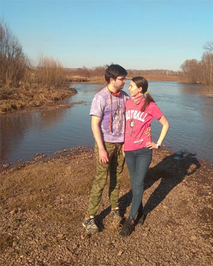

Отлив реки Анжа
Периодически в местечке с кодовым названием "Старая Деревня" можно застать отлив реки Анжи.
В то время, как обычно бурная река представляет опасность, во время отлива у реки
образуются романтичные островки прямо посреди реки.
Особо искушенные посетители доезжают до островков на велосипеде или машине только ради того, чтобы
испытать истинное наслаждение от близости с природой, звуков журчащей воды и неповторимых видов.